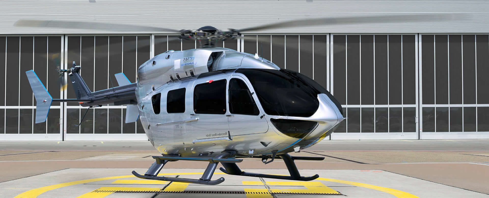

EC 145 Mercedes-Benz Style
O EC 145 Mercedes-Benz Style, a esportividade e potência da marca de helicópteros franco-alemã Eurocopter aliadas ao luxo e sofisticação da fabricante de veículos Mercedes-Benz foram os ingredientes principais para o desenvolvimento do EC 145 Mercedes-Benz Style.
O helicóptero foi construído com materiais exclusivos que lhe renderam boas doses de elegância, conforto e segurança.
O EC 145 é o único de sua categoria que acomoda até oito passageiros e de maneira bastante espaçosa, pois todos os assentos são montados em trilhos que podem ser removidos com facilidade para que haja um espaço interno maior para bagagens.
Além disso, o helicóptero possui três porta-objetos, uma geladeira, uma mesa e dois monitores de 15 polegadas. O layout da cabine foi inspirado na Mercedes Classe “R”.
A aeronave é equipada com duas turbinas Turbomeca ARRIEL 1E2 de 770 hp cada uma e atinge velocidade máxima de 268 km/h com autonomia de 680 km.